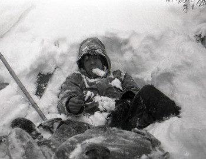

The Dyatlov Pass Incident
The Journey to Otorten: In late January 1959, a group of nine highly experienced mountaineers and students from the Ural Polytechnical Institute, led by Igor Dyatlov, embarked on a grueling winter expedition through the northern Ural Mountains. Their goal was to reach the remote, treacherous peak of Otorten. By the evening of February 1, the group set up their tent on the snowy, exposed slopes of Kholat Syakhl (a name translating to "Dead Mountain" in the local Mansi language). As seasoned winter hikers, they were thoroughly prepared for the brutal sub-zero conditions, but a sudden and terrifying event would prevent them from ever seeing the morning.

A Frantic Escape: When the group failed to send a scheduled telegram weeks later, search and rescue teams were deployed. What they discovered in late February sparked one of the 20th century's most enduring mysteries. The hikers' tent was found half-buried and deliberately slashed open from the inside—indicating a desperate, panicked escape in the middle of the night. Footprints in the snow revealed the group fled their shelter into the pitch-black, -30°C (-22°F) blizzard, many of them barefoot or wearing only socks and light undergarments. The bodies were found scattered down the mountain in the treeline and in a ravine. While some clearly died of severe hypothermia, others suffered inexplicable, massive internal trauma—such as crushed chests and fractured skulls—comparable to the force of a high-speed car crash, yet lacking external soft-tissue wounds. Bizarrely, trace levels of radiation were also detected on some of their clothing.
Key Facts
Date: February 1–2, 1959 (Incident occurred overnight)
Location: Kholat Syakhl (later named Dyatlov Pass), Ural Mountains, Soviet Union (Russia)
Casualties: 9 experienced hikers dead; spawned decades of international folklore, investigations, and mountaineering safety studies.
Cause: Modern scientific consensus points to a localized slab avalanche that destroyed their shelter, leading to massive blunt-force trauma and fatal hypothermia.
Theories and Resolution: For decades, the bizarre circumstances and the original Soviet investigator's vague conclusion of an "unknown compelling force" fueled endless theories, ranging from secret military weapons testing and infrasound-induced panic to supernatural phenomena. However, after the Russian government reopened the investigation in 2019, modern scientific modeling strongly supported the theory of a localized "slab avalanche." Evidence suggests that when the hikers cut into the snowy slope to pitch their tent, they destabilized a hard block of compacted snow. Hours later, this slab silently slid down, crushing the tent and severely injuring several hikers. Forced to cut their way out, the survivors dragged their dying friends into the freezing wilderness, ultimately succumbing to the lethal temperatures.